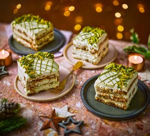

Pistacio Tiramisu

Description
A twist on tradition tiramisu, featuring a creamy pistachio cream filling and crunchy pistachio topping.
Ingredients
- 3 eggs, separated
- 100 g caster sugar
- 250g mascarpone
- 2 tbsp marsala or coffee liqueur
- 150ml double cream
- 5 tbsp pistachio cream spread, plus 1 tbsp melted spread or spread of a loose consistency, for decorating
- 200ml strong black coffee made with 1½ tbsp instant coffee granules, cooled
- 75ml amaretto
- 300g savoiardi sponge fingers
- 25g regular or slivered pistachios, roughly chopped (you can find slivered pistachios online)
Steps
- Line the base and sides of a deep 20cm loose-bottomed square tin with baking parchment. Add some strips of parchment that hang over the sides of the tin to help lift the tiramisu out. Beat the egg yolks and sugar together using an electric whisk until pale, thick and doubled in volume. Add the mascarpone and marsala, and whisk again for about 3 mins to combine.
- Whisk the cream and 3 tbsp of the pistachio spread together in a separate bowl until the mixture just holds its shape, then fold this into the mascarpone mixture. Clean the beaters and whisk the egg whites to stiff peaks in a third bowl, then fold this into the pistachio-mascarpone mixture. Keep chilled.
- Whisk the coffee, amaretto and 2 tbsp pistachio spread together in a shallow dish. Dip the sponge fingers into the mix briefly on both sides, then arrange in a single layer in the base of the tin. Spoon over a third of the filling, then repeat the process twice, alternating between the sponge fingers and filling.
- Chill for 3-4 hrs, or overnight. Transfer to a serving plate, drizzle over the melted pistachio spread in a criss-cross pattern, and sprinkle the slivered pistachios around the edge.